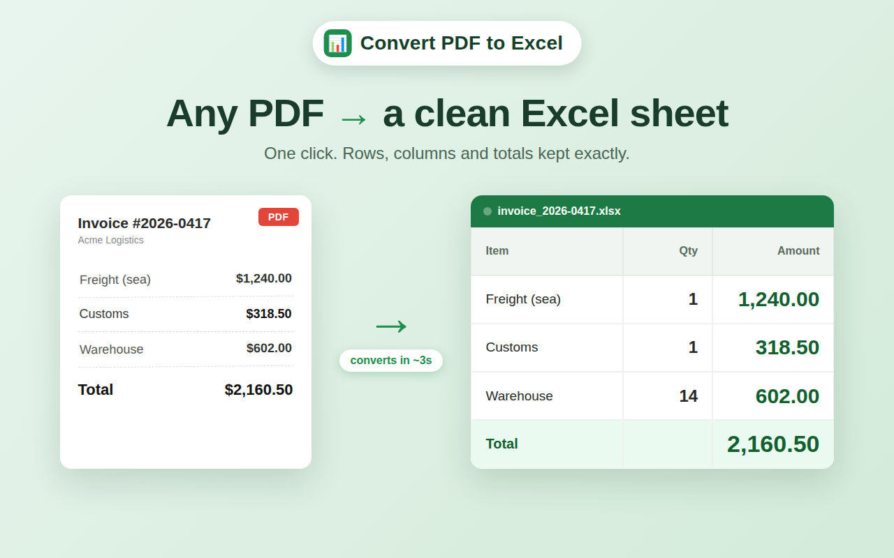

Stop retyping tables
from PDFs
Convert any PDF into a clean, editable Excel sheet in one click. Rows, columns and totals kept exactly, numbers stay real numbers you can sum.
No sign-up · runs in your browser · works both ways: PDF to Excel and back

Copy-pasting a PDF table never ends well
Paste it into Excel and everything lands in one column. Numbers turn into text you can't sum. You end up rebuilding the whole table by hand. This does it in one click, with rows and columns where they belong.
How it works
Three steps, a few seconds. Text PDFs never leave your machine.
Open the PDF
Click the extension on any PDF: an invoice, a report, a bank statement.
Extract the tables
It reads the table structure and pulls every row and column into a spreadsheet.
Save as Excel
Download a clean .xlsx. Numbers stay numbers, totals stay totals, ready to edit.
Why people use it
Built to do one job well, without the clutter of a full PDF suite.
Structure preserved
Rows and columns land where they should, not in one messy blob of text.
AI mode for scans
Photographed or scanned PDFs, including image-only invoices, get read too.
Private by default
Text-based PDFs are parsed locally in your browser. No account, no upload.
Your files stay yours
For a tool that reads invoices and bank statements, that is the whole point.
- Text PDFs are parsed locally in your browser, nothing is uploaded.
- No account, no email, no sign-up to start converting.
- AI mode (for scanned or image-only PDFs) is opt-in, you choose when to use it.
Questions
Is it free?
Yes. Converting text-based PDFs to Excel is free with no sign-up. AI mode for scanned files is an optional paid add-on.
Do my files get uploaded anywhere?
Text-based PDFs are parsed locally in your browser and never leave your machine. Only if you turn on AI mode for a scanned file does that page get processed remotely.
Which files does it handle?
Invoices, bank statements, reports, price lists, any PDF with tables. It also converts the other way, Excel to PDF.
Do I need an account?
No. Install it and start converting. There is no login and no email required.
Does it work on scanned PDFs?
Yes, through AI mode, which reads photographed or image-only PDFs where there is no selectable text.